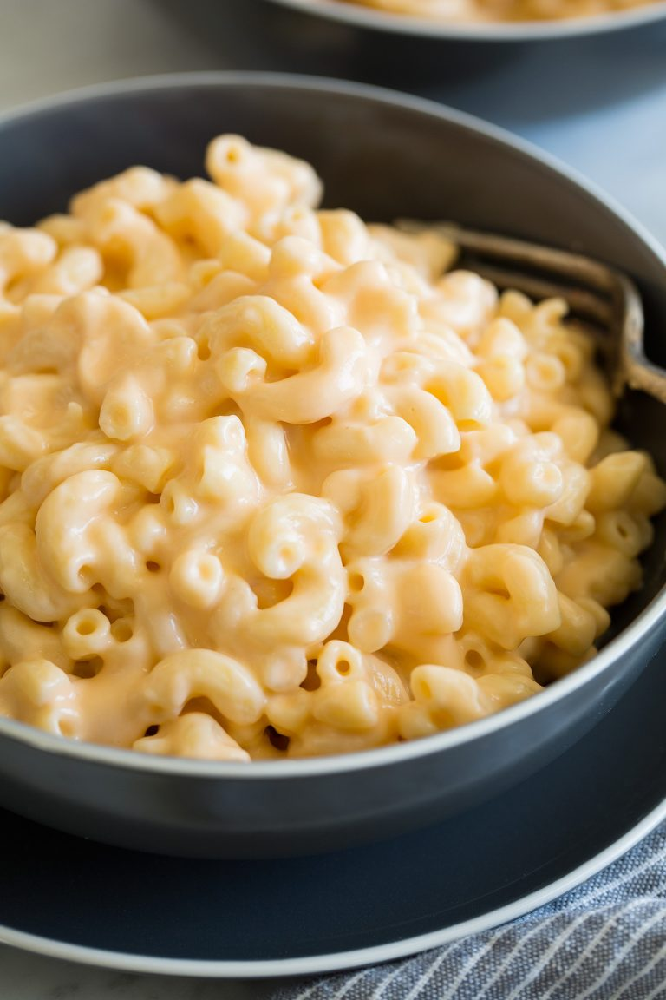

Mac N Cheese

Description
Who made the mac n cheese??
Ingredients:
- elbow macaroni shells
- macaroni shells
- cubed processed cheese
- ground black pepper
- milk
Steps:
- Bring a large pot of lightly salted water to a boil. Add pasta and cook until al dente, 8 to 10 minutes; drain.
- Place a saucepan over medium-low heat. Combine the cheese food, milk, and pepper in the saucepan; cook until the cheese has melted, stirring frequently. Stir in the drained macaroni until evenly coated.
Home